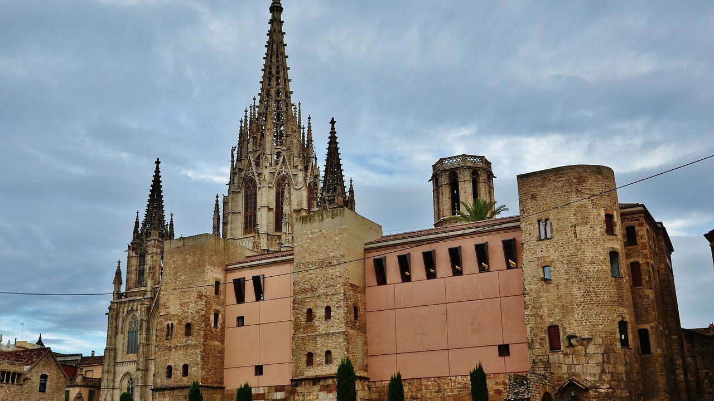

Race, La Mercè, Barcelona

Behind
Best +0:01
371W
Target 418 W-47 W
- Cadence
- 87rpm
- Heart
- 140bpm
- Speed
- 26.5km/h
Recover18 of 24
0:12
Next: · 1:30 at level 21
-0.6%
15 m climbed
9.32 km
10
Resistance / 32
Solo races your best-time ghost: position reads Ahead or Behind, and solo alone gets a Pause button. Frozen at 21:48.